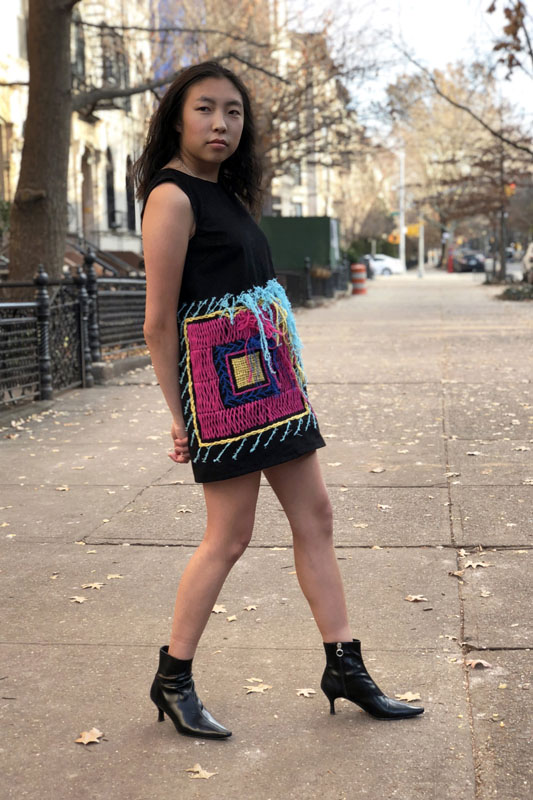
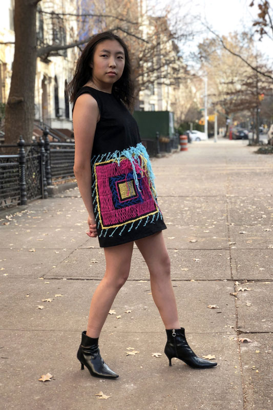
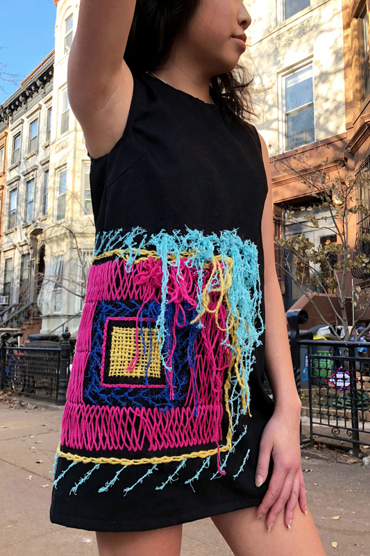
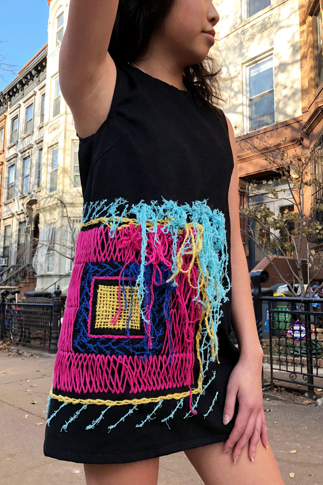

Masking
Inward/
Projecting
Outward
Fall 2018
Life is not a spectator sport, yet an individual lives under constant influence and surveillance of others. A key component of the battle between interior and exterior is dress. It contributes to one’s persona, allowing protection of the inner being.
There is an intense societal pressure to prove oneself to others, but expression should be in one’s own best interest. We do not need to appear as the perfect image of ourselves, and dress can be used to acknowledge and embrace this.
Jacket: cotton yarns latch hooked onto canvas mesh with waxed cotton shell.
Dress: cotton yarns hand embroidered onto cotton twill.


 


 
